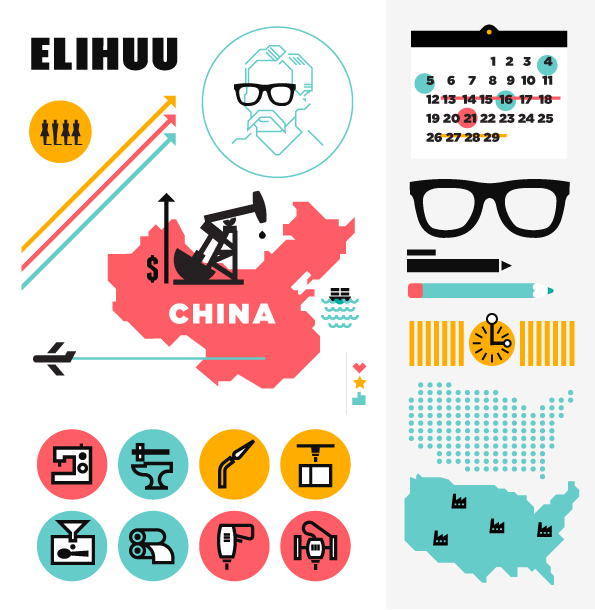

dojo4 had the opportunity of to work with Dorian Ferlauto, founder of Elihuu.com. Dorian is a veteran of the design industry and was recently the buyer at Factory Made before setting off on the creation of her own start-up business. Elihuu connects designers and manufacturers in the swiftly burgeoning maker movement. dojo4 developed a brand identity and created a marketing strategy that will help potential investors and clients visualize the complex world of custom fabrication.
After workshopping a few options with the client, we felt an infographic-based illustration set would be a flexible asset. This way she would have the option of combining the various pieces into cohesive visual presentations without having to invest additional monies for studio time. I think infographics are generally overused in the design marketplace, but this seemed like a great opportunity to illustrate an idea. The formula was simple and we executed a simple Squarespace website, brand identity, and visual assets in 2 weeks of work.
It was fun to execute in an agile fashion and get the assets designed, a small website deployed and the information out on the street. Dorian is out spreading the news about her product and we are hopeful it really takes off, its a great idea! Check out her website at Elihuu.com.
